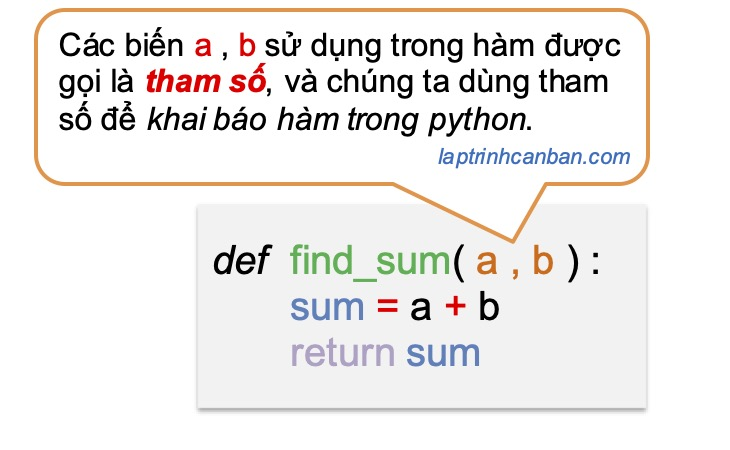
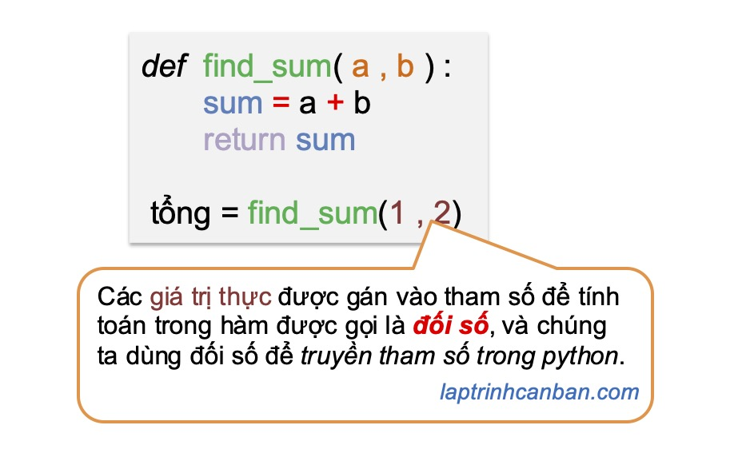
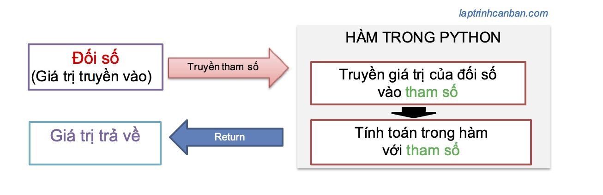
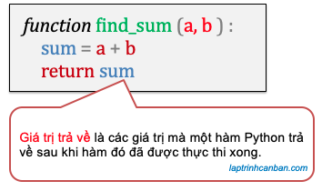

記事掲載：https://laptrinhcanban.com/ja
Pythonの関数について学びましょう。Python の関数の概念、パラメータ、引数、戻り値などの基本コンポーネントを含む Python の関数の構造を 学習します。このレッスンの後、組み込みの python関数、python モジュール関数、およびユーザー定義の Python 関数を含むpython 関数についても学習します。
次のように、Python 関数で使用される 3 つのコンポーネントに注意する必要があります。
- パラメーター (parameter)
- 引数(argument)
- 戻り値
また、次のように Python で 3 種類の関数をマスターする必要があります。
- 組み込み関数
- モジュールの関数
- ユーザー定義の関数
これらの事実を以下の清と一緒に明らかにしましょう。.
Python の関数
Pythonの関数とは
Python の関数は、プログラムで特定の関数を実行するための一連の操作の固まりです。関数を使用すると、さまざまなハンドラーを 1 つに結合して名前を付けることができます。関数を作成して名前を付けたら、プログラムで使用する必要があるたびに関数名を呼び出すだけです。
再処理を 1 つの関数にまとめることで、ハンドラーを何度も書き直す必要がなくなり、コードを記述する際のエラーが減り、関数を別のプログラムで再利用できるようになります。
関数は値を取り、何らかの処理を経た値を返すことができるため、最小限のプログラム コードで最大の容量を生成できます。
Pythonの機能を使いこなすことは、プログラマーにとって必須のスキルと言っても過言ではありません。
Python の関数内のコンポーネント
Python で関数について学習する場合、パラメーター、引数、および戻り値を含む関数の 3 つのコンポーネントを理解する必要があります。
Python で関数を使用してコンポーネントを視覚化するために、次の単純な関数の例を見てみましょう。この関数は、次のようにプログラムで 2 つの数値を合計し、結果を返すのに役立ちます。
def find_sum(a,b): |
Python で def キーワードを使用して関数を宣言し、上記の find_sum 関数を宣言するときに使用するa および bという名前の変数をパラメーター(parameter)と呼びます。
関数を宣言した後、以下のように Python で関数を呼び出して使用できます。
tổng = find_sum(1,2) |
- def 関数を使用して Python で関数を宣言する方法、および Python で関数を呼び出す方法の詳細については、Python での def の記事と関数を作成するための構文を参照してください。
python で関数を呼び出すときは、上記の例の 1 と 2 のような実数値を引数として渡し、関数内で計算します。関数に渡される実際の値を引数と呼び、計算のために実際の値を関数に渡すことをpythonではパラメータ渡しと呼びます。
関数の実行が完了すると、関数は値を返します。これをPython 関数の戻り値と呼びます。
以下のPythonでのパラメータ、引数、および戻り値について詳しく学びましょう。
Python のパラメータと引数
パラメータとは| Parameter
パラメーター (parameter) は、関数で処理するために渡された値 (引数) を受け取るために使用される名前付き変数です。
python で関数を宣言するときにパラメーターが使用されます。

Python で関数を宣言するときは、上記の変数 a と b としてパラメーターを指定するだけです。ただし、Python マスターの場合、さまざまなケースでさまざまな種類のパラメーターを使用して、コードを美しくし、プログラムをよりスムーズに実行します。
python チュートリアル サイトPython Doccumentによると、 python には 5 種類のパラメーターがありますが、通常は次のように python で最大 4 種類のパラメーターを使用します。
位置 パラメータ
キーワード パラメータ
デフォルト パラメータ
カスタム パラメータ
この記事の枠組みの中で、Kiyoshiはこの問題について深く議論することはしません. ただし、プロのように python でパラメーターを使用するのに役立つように、Kiyoshi は別の記事で説明したいと思います。
引数とは | Argument
引数は、関数を呼び出すときに渡される 実際の値です。関数に渡された引数は、パラメーターに割り当てられ、 python で関数を呼び出すときに使用されます。

また、実際のメインの python チュートリアル サイトPython Doccumentによると、python には次の 2 種類の引数があります
位置 引数
キーワード 引数
この記事の枠組みの中で、清はこの問題について深く議論することはしません. ただし、プロのように Python で引数を使用するのに役立つように、Kiyoshi は別の記事で説明したいと思います
引数とパラメータの違い
Kiyoshi は、この記事を読む前に、まだpython でパラメーターと引数を区別する方法を知らない人がたくさんいると確信しています。しかし、上記の分析を通して、python におけるパラメーターと引数の違いは理解できましたか? 引数とパラメータの違いをまとめましょう。
- パラメーターは、関数宣言で使用される名前付き変数です。
- 関数の引数は、関数を呼び出すときに渡される実際の値です。
- パラメーターは、関数の外部から渡された引数の値を受け取り、関数内で計算を実行します。
Python でパラメーターを渡す
Python で関数を呼び出す場合、引数 (実際の値) をパラメーターを介して関数に渡します。パラメーターを介して関数に引数を渡すことは、 Pythonではパラメーターの受け渡しと呼ばれ、次のように表されます。

Pythonでの戻り値(return values)
戻り値は、その名前が示すように、関数の実行が終了した後に関数が返す値です。

関数の戻り値は、数値、文字列、リスト、または関数宣言で指定されたその他のデータ型です。
ただし、値を返さない関数もあります。この時点で、デフォルトの戻り値はnone、nullまたはundefinedになります。
関数から値を返すには、 python で return ステートメントを使用する必要があります。詳細については、次の記事を参照してください。
- 参照: Python での戻り値と戻り値
Python の関数種類
Python関数で使用される定義を知った後、ここではPythonの関数の種類を学びます. Python には、組み込みの Python関数、Python モジュールの関数、およびユーザー定義の Python 関数
の 3 種類の関数があります。
組み込みの Python関数
組み込みの Python関数はPythonのインストールする時にセットで付与された組み込み関数です。これらの関数は python プログラムで使用できるため、Python プログラムにインポートせずに直接使用できます。
たとえば、print()関数、int()関数、len()関数、range() 関数などpython で使用でき、次のようにプログラムで直接使用できます。
chuoi = "初心者のための独学のpython" |
Python モジュールの関数
Python モジュール内の関数は、Python モジュールにパッケージ化された関数です。Python モジュールの関数はプログラムに組み込まれていないため、関数を使用する前に、関数を含むモジュールをプログラムにインポートする必要があります。
たとえば、Python でファイルの名前を変更するために使用されるos.rename()関数や、Python でパスを結合するために使用されるos.path.join()関数のような Python のファイル処理関数は、すべて os モジュールの関数です。次のように、使用する前にこのモジュールをプログラムにインポートする必要があります。
import os |
ユーザー定義の Python 関数
ユーザー定義の Python 関数 (user-defined functions))は、プログラム内で宣言して自分で作成する関数です。関数を宣言した後、それらをプログラムで直接使用するか、自己作成モジュールにカプセル化し、必要に応じて他のプログラムで再利用できます。
Python のユーザー定義関数の大きな利点は、自由に関数をカスタマイズできることです。これは、関数が独自の作成、独自の設計、および独自のコントロールであるためです。
Python で関数を宣言する方法も非常に簡単です。defコマンドを使用して、関数名とその def ブロック内の関数の処理ステートメントを宣言します。たとえば、次のように 2 つの数値の合計を求める独自の関数を作成できます。
def find_sum(a,b): |
Python ユーザー定義関数の使用は、他の関数と同じです。関数を宣言した後、使用する必要があるときに関数名を呼び出すだけです。.
c = find_sum(1,2) |
- def 関数を使用して Python で関数を宣言する方法、および Python で関数を呼び出す方法の詳細については、Python での defの記事を参照してください。
まとめ
上記の Kiyoshi は、python の関数とも呼ばれるpython の関数について説明しました。レッスンの内容をよりよく理解するために、今日の例を書き直す練習をしてください。
また、次のレッスンでは、Python で関数を宣言して呼び出す方法を引き続き学習しましょう。
URL Link
ホーム › 初心者向けのpython学習>>14. pythonの関数